CS180 · Intro to Computer Vision and Computational Photography
I stood in one spot and rotated my phone around the axis of the camera so the camera stayed in the same place. I aimed for about 40% overlap in my photos and shot each of the 3 sets quickly to keep changes in the scene to a minimum.
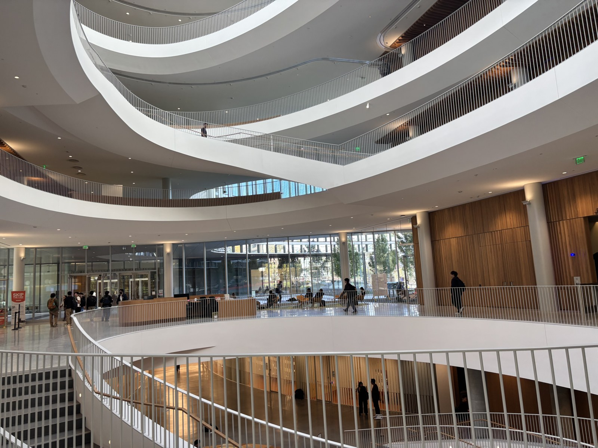
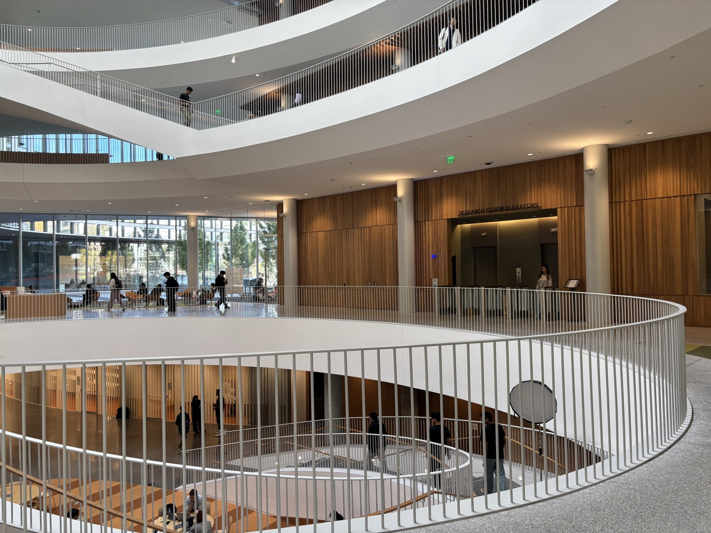
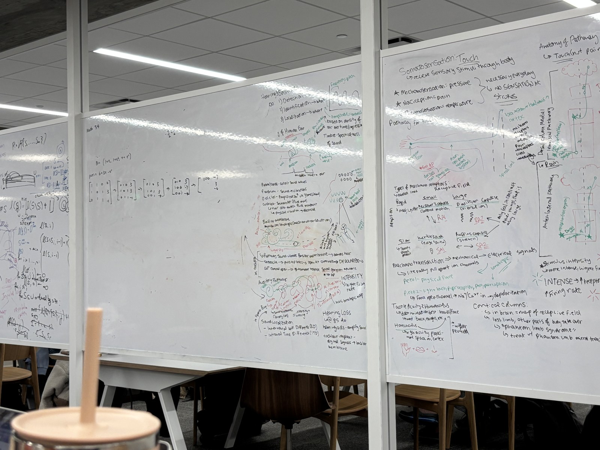
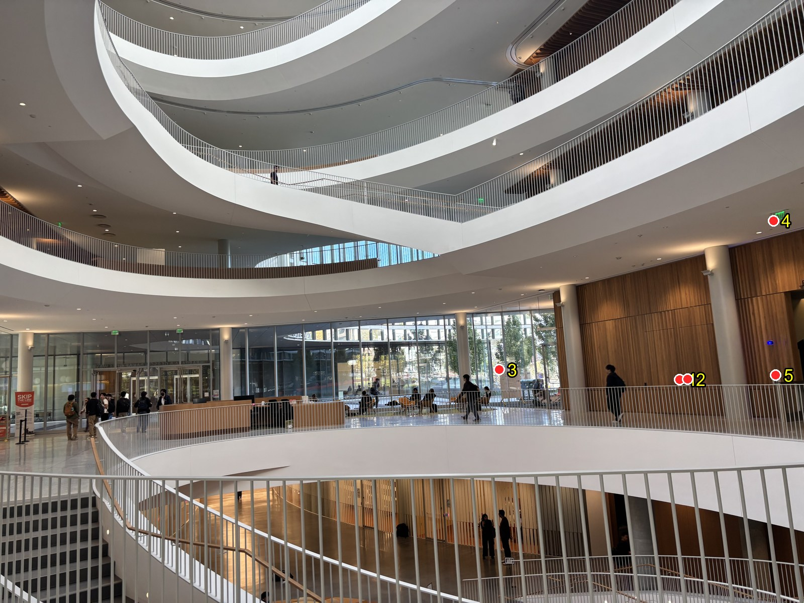
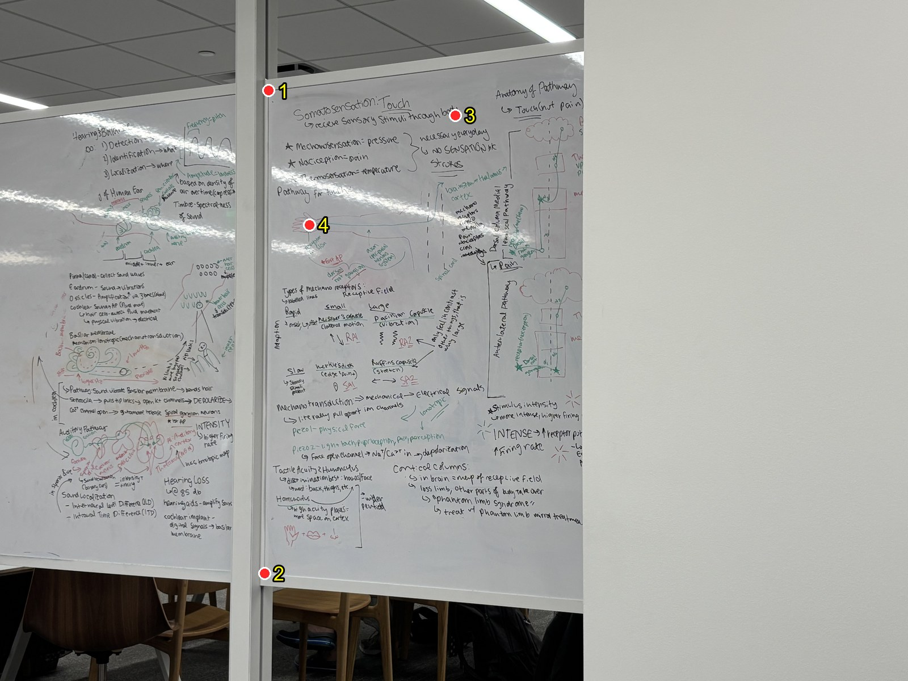
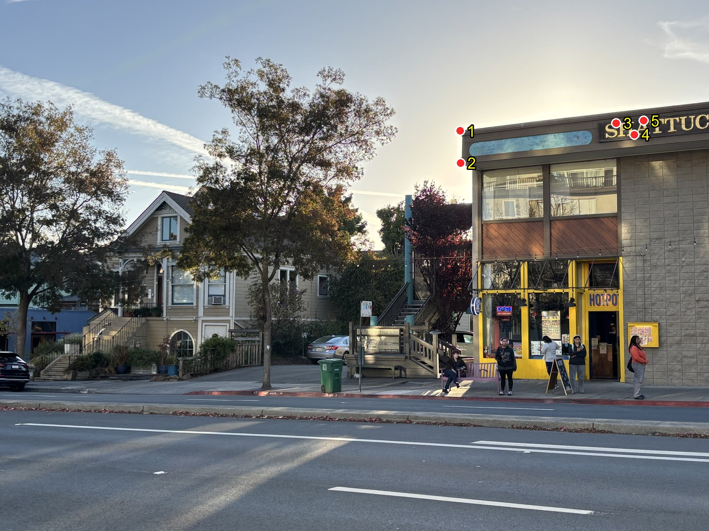
I wrote the homogeneous multiplication p' ~ Hp with H = [[h11, h12, h13], [h21, h22, h23], [h31, h32, 1]]:
x' = (h11·x + h12·y + h13) / (h31·x + h32·y + 1) y' = (h21·x + h22·y + h23) / (h31·x + h32·y + 1)
I multiplied by the denominator and got two linear equations per point:
x' = h11·x + h12·y + h13 − h31·x·x' − h32·y·x' y' = h21·x + h22·y + h23 − h31·x·y' − h32·y·y'
Each point gives two rows of A:
[ x y 1 0 0 0 -x·x' -y·x' ] [h11 h12 h13 h21 h22 h23 h31 h32]T = x' [ 0 0 0 x y 1 -x·y' -y·y' ] = y'
I used 5 points for Gateway and Shattuck North and 4 for the Moffitt whiteboard. I solved by least squares and set h33 = 1.
Gateway
[[ 2.301264 0.110816 -4999.877230] [ 0.484053 2.083817 -3069.808459] [ 0.000189 0.000091 1.0 ]]
Moffitt whiteboard
[[ 0.548705 0.004317 2247.338574] [-0.119769 0.847297 197.860275] [-0.000073 -0.000005 1.0 ]]
Shattuck North
[[ 1.475483 0.001563 -4459.652025] [ 0.221910 1.375541 -386.246059] [ 0.000079 0.000031 1.0 ]]
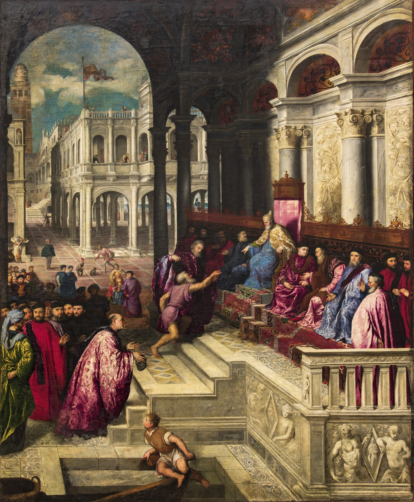
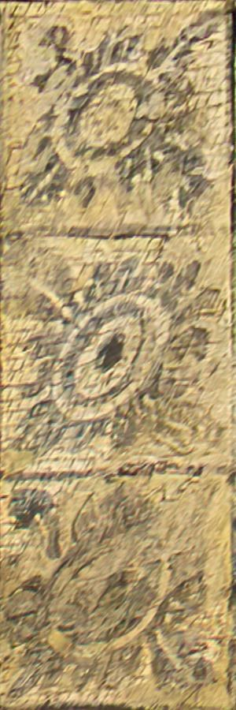
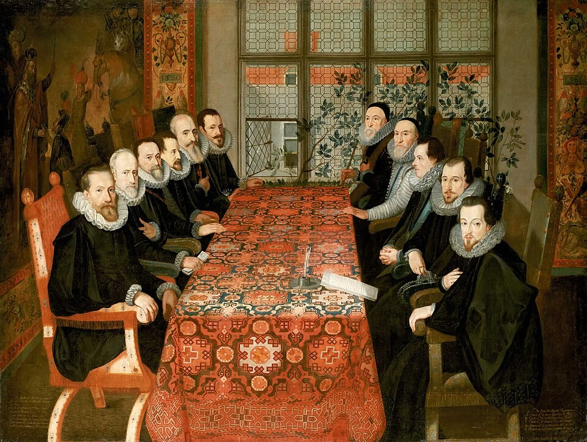
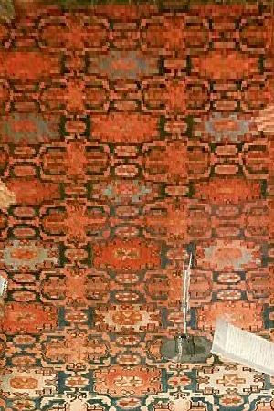
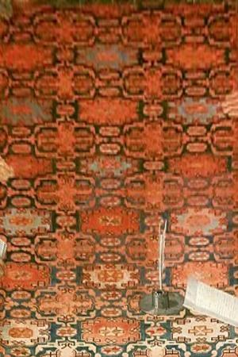
| Image | Output size | Nearest neighbor | Bilinear | Bilinear / NN |
|---|---|---|---|---|
| wth | 300×900 | 110 ms | 284 ms | 2.6× |
| table_cloth | 300×450 | 22 ms | 53 ms | 2.4× |
Bilinear gives smoother edges than nearest neighbor. This is very apparent in the tablecloth image but a little less in the tiles. It runs slower by around 2.5x (110 vs. 284 ms and 22 vs. 53 ms) but it is negligible with the size of the images I'm working with, so I decided to stick with it moving forward.
I computed H from clicking points with the tool from the generous student and used it to warp the first image into the second image's frame with inverse warping. To blend them I used weighted averaging. Each image gets a weight that is 1 at its edge and rises towards its center.
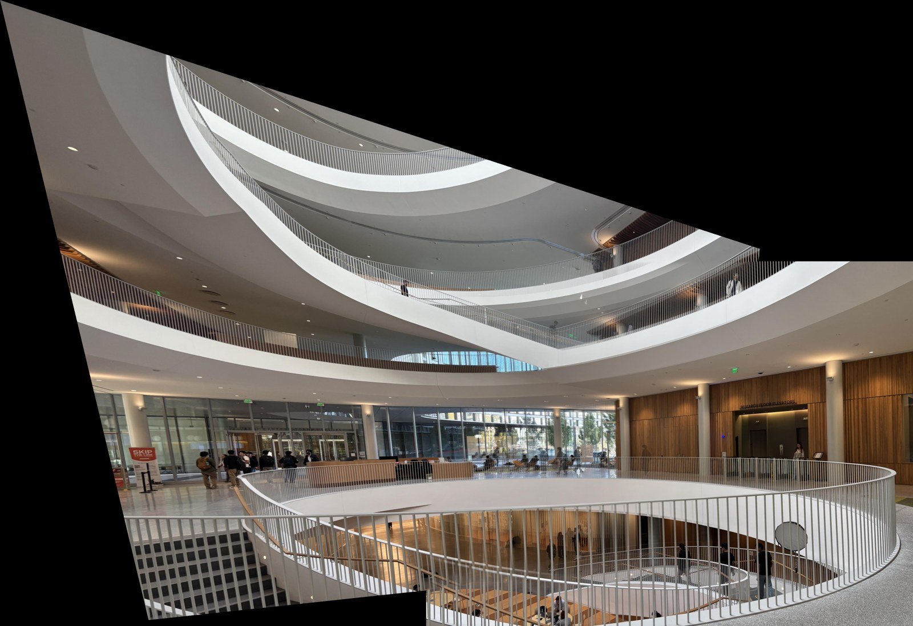
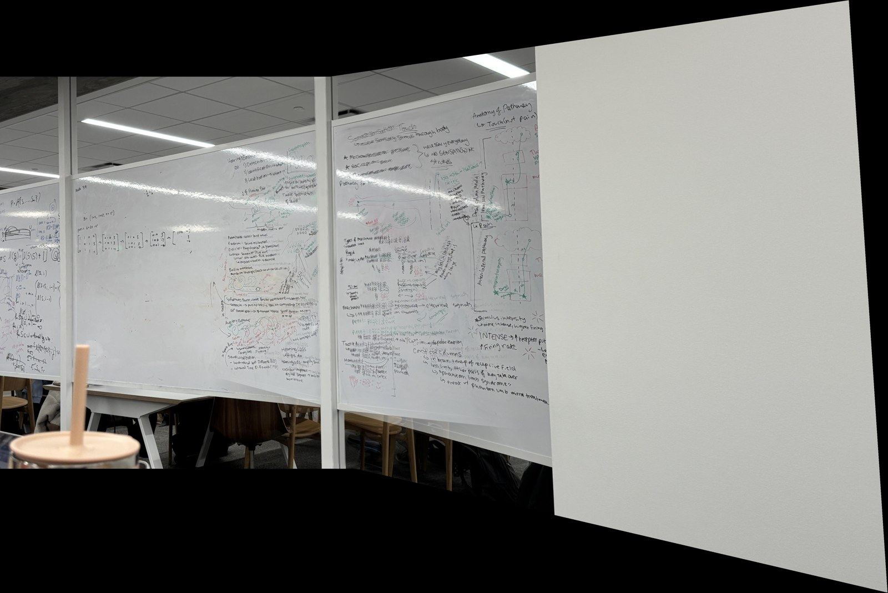
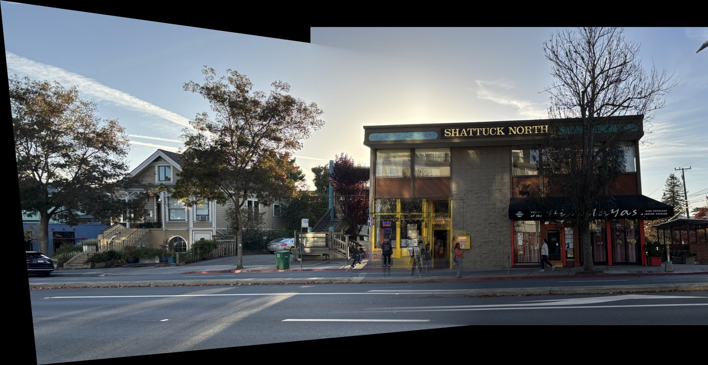